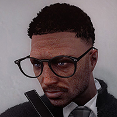

Chief of San Andreas Fire and Medical Services
Dr. Noah Rogers

Lernen Sie die Spitzenführung kennen – das Team, das die strategische und operative Leitung von San Andreas Fire and Medical Services prägt.